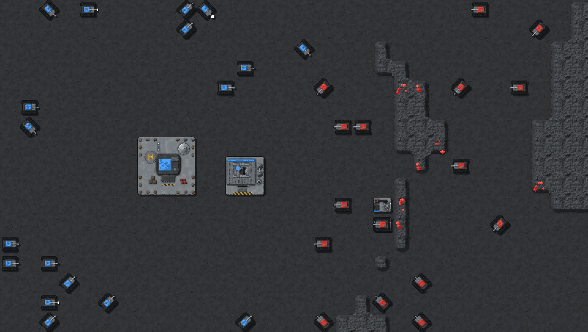
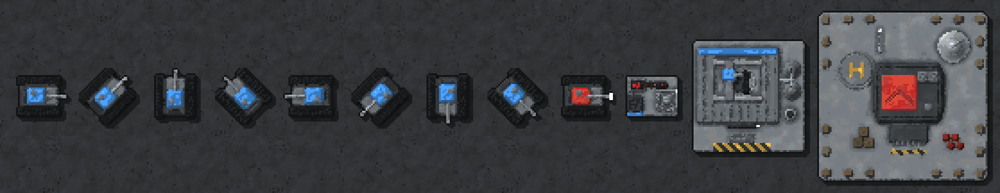
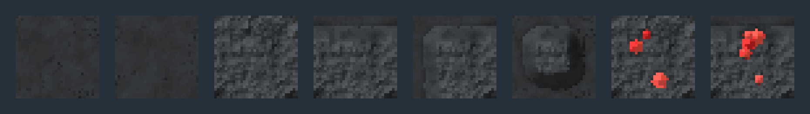

WAR-2D pixel style samples (round 3)
The lit models from round 2, finished as pixel art: 32 px per tile (your current art's size), every pixel snapped to a limited Charcoal palette with no blending, a 1 px dark outline and hard 2 px shadows. Blue and red are player colours 1 and 2.
The buildings were redesigned to show what they do:
- Small Unit Spawner: a vehicle factory. The roof is open over the assembly bay, where a tank chassis sits on a turntable under a gantry crane carrying its turret (team colour). The striped roller door on the south side is where vehicles leave. Fuel tanks and a pipe on the east side, an exhaust stack.
- HQ: a command post on a concrete pad behind sandbags: a bunker with the team's roof marking and AC units, a radar dish, an antenna, a helipad, a garage with a striped apron, supply crates and fuel drums.
- Miner: a drilling rig. A derrick over the drill at the gem face (east), a conveyor carrying ore back to a hopper, and an engine with an exhaust.
In game (2×, about the default zoom)

Units and buildings (4×)
The Tank in 8 facings, the Tank firing, the Miner, the Small Unit Spawner and the HQ.

Terrain (6×)
Two floor tiles, rock enclosed, open to the north, open on two sides and isolated, then gem rock enclosed and at an edge.
